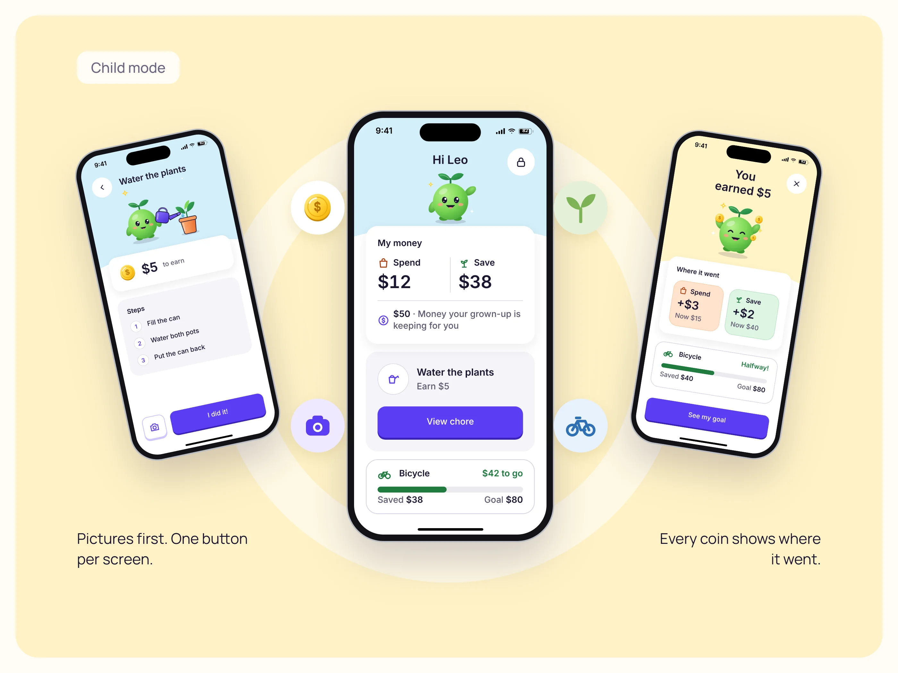
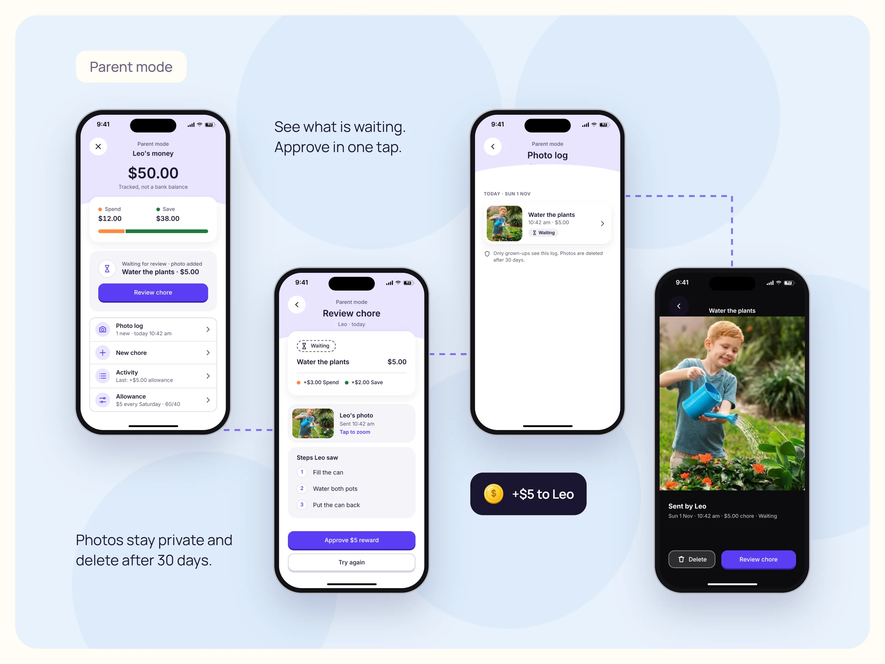
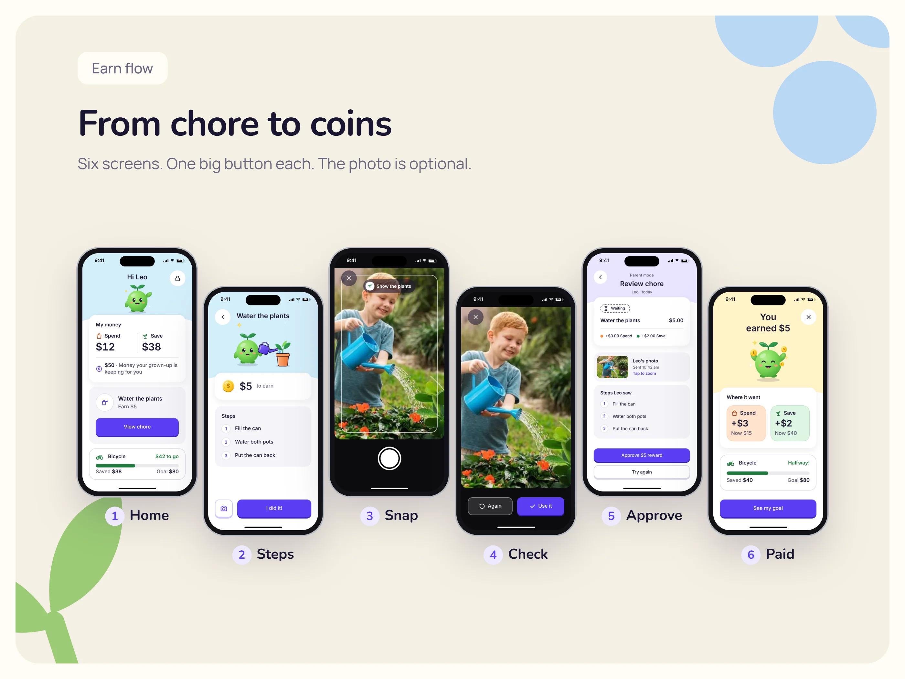
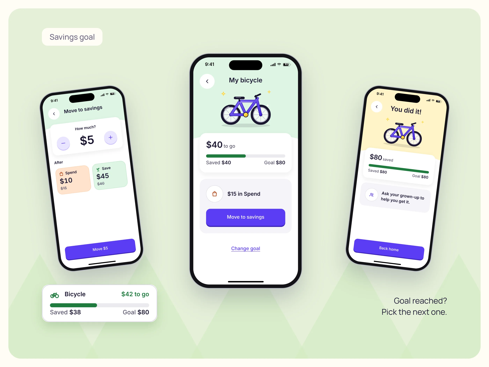

Sprout
Small jobs. Big goals.
A chore and allowance app that helps children see what they earn, choose what to spend, and save toward a goal—with parents in control.
- Project
- Mobile app concept
- Experience
- Child & parent modes
- Design
- App flows, UI & prototype


Making money
make sense.
Sprout starts with a small everyday task and something worth saving for. The idea is to make the connection between effort, earning and progress visible to a child.
The child experience uses pictures, simple steps and a clear split between Spend and Save. Parents set up chores, review completed tasks and approve rewards, while children can see their savings move closer to a goal.
Sprout tracks money the grown-up keeps. It doesn’t hold money or provide a bank account or card.
One small job at a time.
A chore becomes a short set of steps with one clear completion button. Children can add a photo, but the camera never stands between finishing a task and sending it for review.

The grown-up has the final say.
The review brings the task, optional photo and reward split together. A parent can approve the reward or ask the child to try again. Photos sit in a parent-only log, with a stated 30-day deletion period.

Something to save for.
The goal has a picture, a saved amount and an amount left to go. Children can move more of their tracked spending money into savings and see what changes.
Spend and Save use words and icons alongside colour. The distinction stays visible without relying on colour alone.
A picture before
a paragraph.
My takeaway from Sprout: for kids, one picture beats three words. The design pairs familiar visuals with a clear next action, while keeping approval with the grown-up.
The next step is to test the earning flow with five families and see whether children aged 7–9 can complete it independently. Repeating chores and support for a second child are also planned explorations.